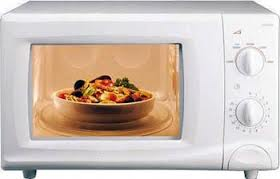

Ремонт микроволновок в Харькове на дому от 50 грн.

Выезд мастера на дом в тот же день.
В 90% случаев неисправность устраняется прямо на месте в течении часа
Вам не придётся никуда везти вашу технику.
Мастер выполнит ремонт СВЧ печи на дому у заказчика в удобное для Вас время.
Работаем во всех районах Харькова без выходных.
На все выполненные ремонты выдаётся гарантия.
Любой ремонт производится только после согласования цены ремонта с заказчиком.
Ремонт микроволновок на дому в Харькове - одно из основных направлений деятельности нашего мастерской. Мы осуществляем ремонт СВЧ печей любых моделей и производителей. Квалифицированным специалистам под силу отремонтировать поломки любого уровня сложности.
Перед тем, как проводить ремонт СВЧ, производится диагностика проблемы, которая привела к неисправностям и выходу техники из строя. Как правило, наиболее подверженным поломкам блоком СВЧ являются силовые цепи. В этом случае ремонт микроволновых печей может включать в себя замену генератора, блока управления или высоковольтных цепей печи.
Чтобы необходимость делать ремонт не возникала слишком часто, стоит придерживаться правил эксплуатации и обеспечивать бытовой технике правильный уход. В первую очередь, важно следить, чтобы внутренняя поверхность микроволновой печи была чистой, и на ней не было подтеков жира. Для этого после пользования бытовым прибором необходимо протирать внутреннюю поверхность печи влажной губкой.
Если же техника все же вышла из строя, обращайтесь к нашим мастерам, и ремонт микроволновки будет выполнен профессионально и в кратчайшие сроки. Это не только удобно, но и выгодно, ведь ремонт стоит относительно недорого, а микроволновая печь — вещь недешевая, и покупать новую технику при каждой поломке нецелесообразно. Мы осуществляем качественный ремонт микроволновок в Харькове по умеренным ценам и работаем со всеми марками и моделями этой бытовой техники.
Ремонт СВЧ печей с нашей помощью – разумное и выгодное решение!
Уважаемые заказчики, обращаем Ваше внимание, что наши мастера выполняют ремонт телевизоров только в Харькове на дому.
Телемастера не выезжают за черту города .